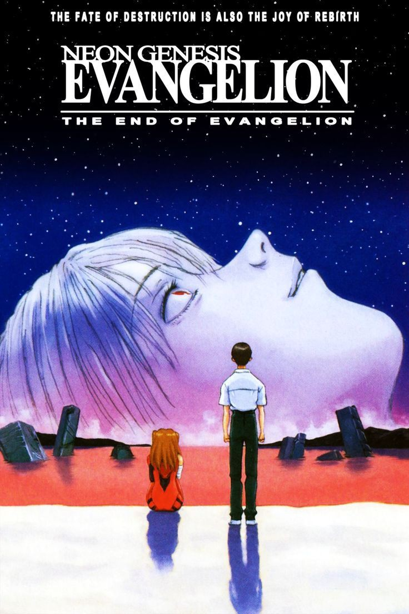

Ryan é um indivíduo com gostos excêntricos, demonstrando uma paixão pelos macacos, um interesse pelo jogo League of Legends (LOL) e uma apreciação por filmes brasileiros extremamente ruins, como Cidade de Deus. Sua personalidade única o leva a explorar diferentes formas de entretenimento, valorizando a diversão e a individualidade em suas escolhas.
Filmes e Jogos favoritos
